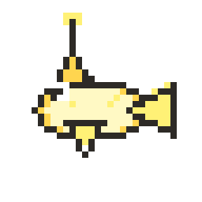
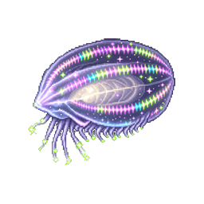

게임 본편에는 아직 반영하지 않았습니다. 상세 화면은 성체 플레이 화면과 같은
--sprite-evolution-size를 쓰고, 그리드는 3열 레이아웃에 맞게 같은 비율로 키웁니다.
상세 화면 (스크린샷과 동일 — 송곳니어)
2.75rem × 2.75rem (약 44px)
clamp(11rem, 58vw, 16rem) — 게임 성체와 동일
참고 — 게임 플레이 화면 성체 크기
pet-area 안 성체 스프라이트 (비교용)
목록 그리드 (3열)
1.75rem × 1.75rem


clamp(4.5rem, 24vw, 6.5rem) — 성체 비율, 3열에 맞게 축소
/* 제안 — style.css 반영 시 */
:root {
--encyclopedia-grid-sprite-size: clamp(4.5rem, 24vw, 6.5rem);
}
.encyclopedia-card__graphic {
min-height: var(--encyclopedia-grid-sprite-size);
}
.encyclopedia-card__img {
width: var(--encyclopedia-grid-sprite-size);
height: var(--encyclopedia-grid-sprite-size);
}
.encyclopedia-detail__graphic {
width: 100%;
min-height: var(--sprite-evolution-size);
padding: 4px 0 8px;
}
.encyclopedia-detail__img {
width: var(--sprite-evolution-size);
height: var(--sprite-evolution-size);
}